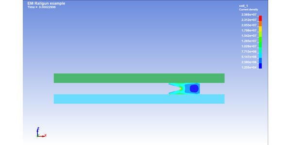
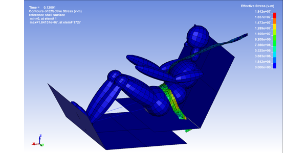
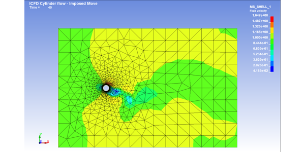
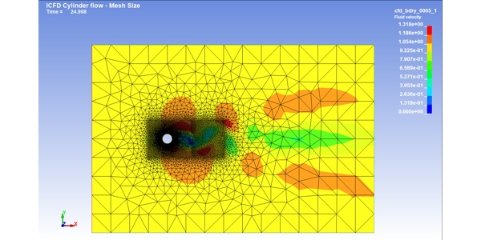
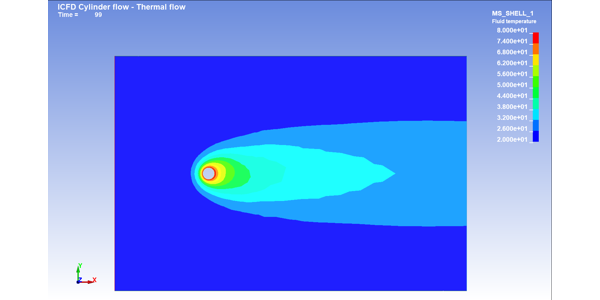
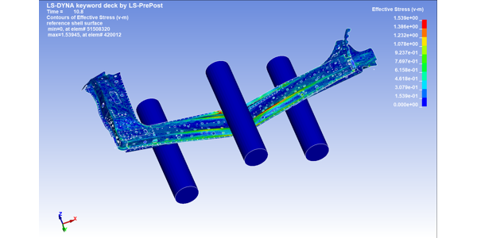

Examples#
Here are a series of examples using LS-DYNA with the ansys-dyna-core library.
Airbag examples#
These examples show how to create Airbag model.

EM examples#
These examples show how to create electromagnetic model.

Railgun example
Explicit examples#
These examples show how to create Explicit model.

Belted dummy example
ICFD examples#
These examples show how to create ICFD model.



Imposed move



Mesh size



Thermal flow

IGA examples#
These examples show how to create Isogeometric Analysis model.

IGA example
ISPH examples#
These examples show how to create ISPH model.

Implicit examples#
These examples show how to create implicit model.

NVH examples#
These examples show how to create NVH model.

SALE examples#
These examples show how to create SALE model.

Thermal examples#
These examples show how to create thermal model.